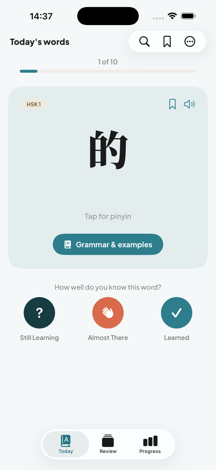
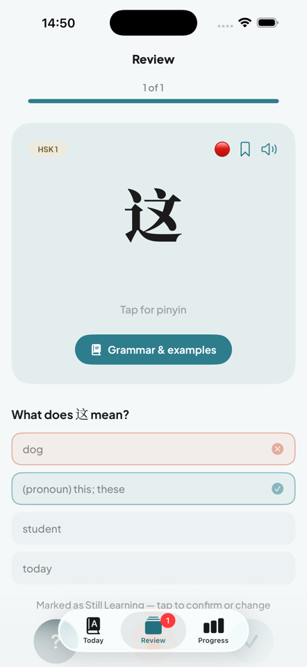
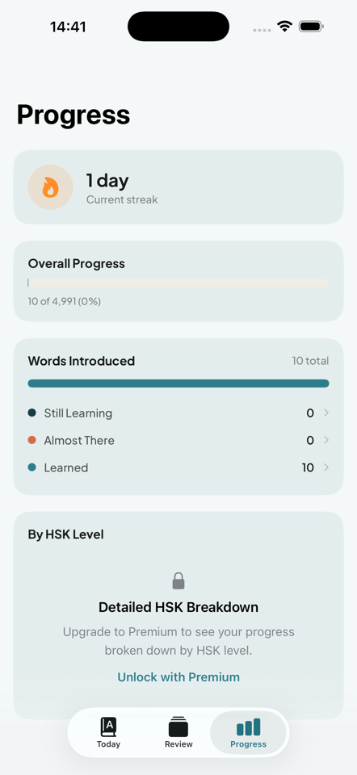

HSK 1–6 · iPhone
คำศัพท์ HSK ฉบับทางการ ครบทุกคำ เรียนทีละนิด ทุกวัน
แอปคำศัพท์รายวันสำหรับผู้เตรียมสอบ HSK และผู้เรียนภาษาจีนที่ตั้งใจจริง ครบทุกคำในรายการคำศัพท์ทางการ สอนอย่างถูกต้องครบถ้วน ไม่คัดกรองบางส่วน ไม่มีโฆษณา ไม่ต้องสมัครบัญชี
ไม่ต้องมีบัญชีเลย
ไม่ต้องสมัคร ไม่ต้องใช้อีเมล เปิดแอปแล้วเริ่มเรียนได้ทันที
ไม่มีโฆษณา ไม่มีการติดตาม
ไม่มีการวิเคราะห์ข้อมูลจากบุคคลที่สาม ไม่มี SDK ติดตามพฤติกรรม
ข้อมูลอยู่ใน iCloud ของคุณเอง
ความคืบหน้าซิงค์ระหว่างอุปกรณ์ของคุณอย่างเป็นส่วนตัว ไม่ผ่านเซิร์ฟเวอร์ของเรา
ครบทั้งหกระดับ ตั้งแต่วันแรก
HSK 1
ฟรี
HSK 2
ฟรี
HSK 3
HSK 4
HSK 5
HSK 6
นิสัยประจำวัน ความก้าวหน้าที่จับต้องได้
- คำศัพท์ใหม่วันละไม่กี่คำ ไม่มีดาวน์โหลดสะสมจนล้น — แตะเลือกสถานะ "กำลังเรียนรู้" "ใกล้แล้ว" หรือ "จำได้แล้ว" ระหว่างเรียน
- ติดตามสถิติวันต่อเนื่อง และดูความคืบหน้าของคุณในทั้งหกระดับได้ชัดเจน
- วิดเจ็ตหน้าจอโฮมและหน้าจอล็อก แสดงคำศัพท์ของวันนี้ให้เห็นในพริบตา


สร้างมาเพื่อการเรียน HSK อย่างจริงจัง
- ทุกคำมาพร้อมพินอิน คำแปล คำอธิบายไวยากรณ์ หมายเหตุการใช้งาน ข้อผิดพลาดที่พบบ่อย และประโยคตัวอย่าง — ตรวจสอบแก้ไขข้อผิดพลาดที่พบในพจนานุกรม CC-CEDICT ซึ่งแอปอื่นมักพลาด
- โหมดทบทวนนำคำศัพท์กลับมาให้ทดสอบตัวเองอย่างรวดเร็ว ก่อนที่คุณจะลืม
- แตะคำใดก็ได้เพื่อฟังเสียงอ่านทันที ประมวลผลในเครื่อง ไม่ต้องใช้อินเทอร์เน็ต
- เรียกดูหรือค้นหาคำศัพท์ทั้ง 4,991 คำได้ทุกเมื่อ และบุ๊กมาร์กคำที่อยากกลับมาทบทวน
เริ่มต้นฟรี อัปเกรดเป็น Premium เมื่อพร้อม
HSK 1 และ HSK 2 — ประมาณ 300 คำแรกที่ผู้เริ่มต้นส่วนใหญ่ต้องใช้ — เรียนฟรีตลอดไป
ฟรี
HSK 1 & HSK 2
ประมาณ 300 คำ เรียนฟรีตลอดไป ไม่ต้องมีบัญชี
พรีเมียม
ปลดล็อก HSK 3–6
ทบทวนได้ไม่จำกัด พร้อมสรุปความคืบหน้าแยกตามระดับอย่างละเอียด
